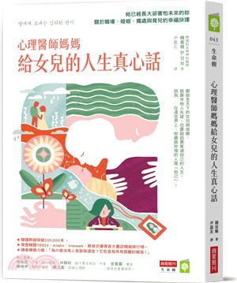
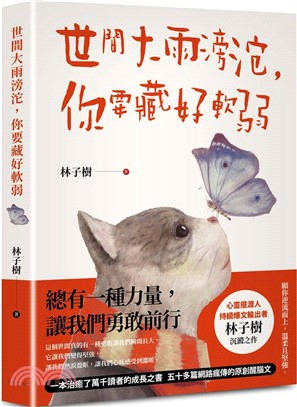
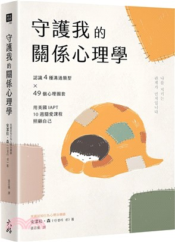
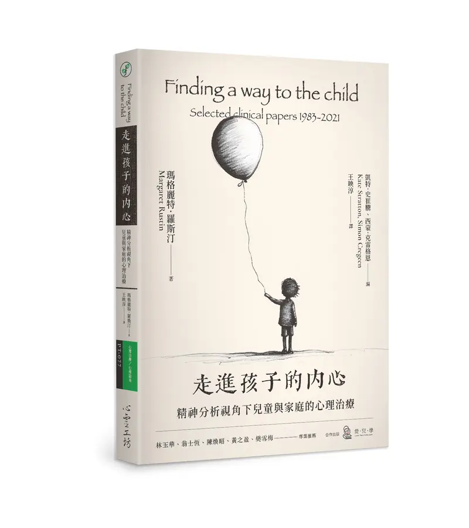

SEL 紙本圖書

索書號: 192.1022 8373
條碼號: A088699
查看館藏

索書號: 178.8 8847
條碼號: A091716
查看館藏
索書號: 170 874
條碼號: A091506
查看館藏

索書號: 177.2 8557
條碼號: A092149
查看館藏

索書號: 191.9 8743:2
條碼號: A092249
查看館藏
索書號: 544.7 845
條碼號: A091998
查看館藏

索書號: 178.8 87
條碼號: A092385
查看館藏
索書號: 178.8 8478
條碼號: A092254
查看館藏

索書號: 178.807 8554
條碼號: A091585
查看館藏
索書號: 544.7 8358
條碼號: A092485
查看館藏
索書號: 191.9 8569-3
條碼號: A091543
查看館藏
索書號: 528.2 8447
條碼號: A092167
查看館藏
SEL 影音光碟 (DVD)

索書號: 176.5 8352
條碼號: V004162...
查看館藏

索書號: 176.52 844
條碼號: V009231
查看館藏
索書號: 173 8249
條碼號: V009790...
查看館藏
索書號: 987.83 8638
條碼號: V002917
查看館藏
索書號: 176.5 8265
條碼號: V010059...
查看館藏
索書號: 987.83 865 2010
條碼號: V005282
查看館藏
索書號: 987.83 8635:2 2018
條碼號: V008791
查看館藏
索書號: 987.83 878
條碼號: V005320-V005321
查看館藏
索書號: 987.83 8873 2015
條碼號: V007767
查看館藏
索書號: 987.83 8795 2007
條碼號: V001520
查看館藏
索書號: 987.83 8784 2016
條碼號: V007797
查看館藏
索書號: 987.83 8843 2007
條碼號: V001319
查看館藏
SEL 線上影音平台